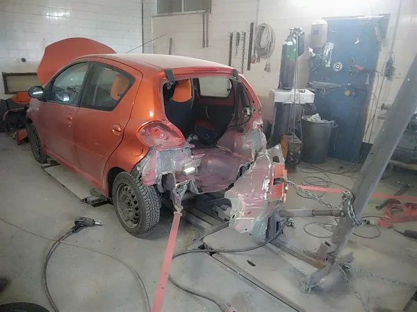

Επισκευές Ζημιών Πλαισίου στον Βόλο
Μια ζημιά στο πλαίσιο ή στο σασί δεν φαίνεται πάντα με το μάτι: ένα όχημα μπορεί να δείχνει εντάξει και να έχει μετατοπιστεί η γεωμετρία του. Μετράμε, ευθυγραμμίζουμε και αποκαθιστούμε το αμάξωμα στις εργοστασιακές προδιαγραφές, ώστε το όχημα να πατάει και να συμπεριφέρεται όπως πρέπει.
Πότε χρειάζεται έλεγχος
- Μετά από σύγκρουση, ακόμη κι αν η ζημιά φαίνεται μόνο «εξωτερική».
- Μετά από δυνατό χτύπημα σε τροχό ή σε πεζοδρόμιο.
- Όταν το όχημα τραβάει στο τιμόνι ή δεν κρατά ευθεία.
- Όταν η φθορά των ελαστικών είναι ανομοιόμορφη ή ο τροχός δεν ευθυγραμμίζεται.
- Όταν οι αρμοί ανάμεσα σε πόρτες, καπό και φτερά δεν είναι ομοιόμορφοι.
- Πριν από αγορά μεταχειρισμένου οχήματος με ιστορικό ατυχήματος.
Γιατί δεν αρκεί το «φαίνεται εντάξει»
Το πλαίσιο είναι η βάση πάνω στην οποία στηρίζονται ανάρτηση, κινητήρας και αμάξωμα. Αν έχει παραμορφωθεί, οι δυνάμεις μοιράζονται αλλού από εκεί όπου σχεδιάστηκε να μοιράζονται: τα ελαστικά φθείρονται πρόωρα, η ευθυγράμμιση χάνεται, και σε μια νέα σύγκρουση το όχημα δεν απορροφά την ενέργεια με τον τρόπο που προβλέπει ο κατασκευαστής.
Γι' αυτό η επισκευή πλαισίου δεν είναι δουλειά που γίνεται «με το μάτι». Γίνεται με μέτρηση πριν, κατά τη διάρκεια και μετά την επισκευή.
Πώς γίνεται η επισκευή
- Έλεγχος και μέτρηση του σημείου αναφοράς του οχήματος, για να διαπιστωθεί αν και πόσο έχει μετατοπιστεί το πλαίσιο.
- Αποτύπωση της ζημιάς και φωτογράφιση, μαζί με ό,τι χρειάζεται για την ασφαλιστική υπόθεση.
- Ευθυγράμμιση με μετρητικά συστήματα και εφαρμογή των δυνάμεων που απαιτεί το συγκεκριμένο σημείο - όχι περισσότερο από όσο αντέχει το μέταλλο.
- Επισκευή ή αντικατάσταση τμημάτων, όταν το μέταλλο έχει υποστεί ζημιά που δεν αποκαθίσταται με ασφάλεια.
- Νέα μέτρηση μετά την επισκευή, για επιβεβαίωση ότι οι αποστάσεις έχουν επανέλθει στις προδιαγραφές.
- Έλεγχος ευθυγράμμισης τροχών και, αν χρειάζεται, συνεργασία με συνεργείο ευθυγράμμισης πριν την παράδοση.

Μαζί με την υπόλοιπη επισκευή
Συνήθως η ζημιά πλαισίου συνοδεύεται από ζημιά σε panel και βαφή. Επειδή φανοποιείο, βαφείο και επισκευή πλαισίου γίνονται στον ίδιο χώρο, το όχημα δεν μετακινείται από συνεργείο σε συνεργείο και ο έλεγχος γίνεται μία φορά, συνολικά.
Αν η ζημιά προήλθε από ατύχημα, αναλαμβάνουμε και τη διεκπεραίωση της ασφαλιστικής υπόθεσης.
Συχνές ερωτήσεις
Πώς καταλαβαίνω αν το όχημά μου έχει ζημιά στο πλαίσιο;
Δεν φαίνεται πάντα. Ενδείξεις είναι το όχημα που τραβάει στο τιμόνι, η ανομοιόμορφη φθορά ελαστικών και οι άνισοι αρμοί στα πάνελ. Ο σίγουρος τρόπος είναι η μέτρηση, που τη κάνουμε στο συνεργείο.
Επισκευάζεται πάντα το πλαίσιο ή μερικές φορές αντικαθίσταται;
Εξαρτάται από την έκταση και το σημείο της ζημιάς. Όπου η παραμόρφωση αποκαθίσταται με ασφάλεια, γίνεται ευθυγράμμιση. Όπου το μέταλλο έχει υποστεί ζημιά που δεν επισκευάζεται σωστά, προτείνουμε αντικατάσταση του τμήματος - και το εξηγούμε πριν ξεκινήσουμε.
Χρειάζεται ευθυγράμμιση τροχών μετά την επισκευή;
Στις περισσότερες περιπτώσεις ναι, γιατί η γεωμετρία της ανάρτησης επηρεάζεται από την επισκευή. Το προβλέπουμε στον έλεγχο πριν την παράδοση.
Καλύπτεται από την ασφάλιση;
Αν η ζημιά προήλθε από ατύχημα που καλύπτεται από το συμβόλαιό σας, η επισκευή πλαισίου συνήθως περιλαμβάνεται στην υπόθεση. Αναλαμβάνουμε την επικοινωνία με την ασφαλιστική και τον πραγματογνώμονα.